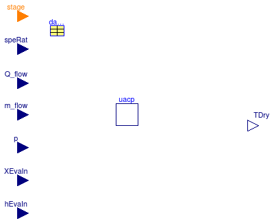
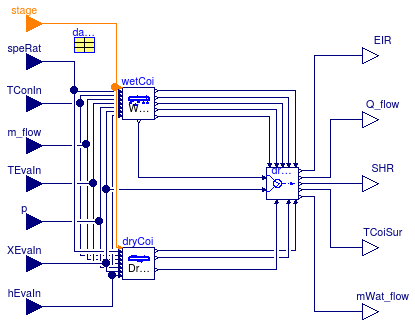
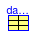
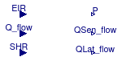
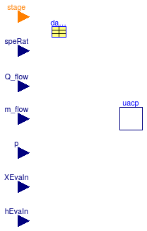

Extends from Modelica.Icons.BasesPackage (Icon for packages containing base classes).
| Name | Description |
|---|---|
| Calculates air properties at apparatus dew point | |
| ApparatusDryPoint | Calculates air properties at dry coil surface |
| Condensation | Calculates rate of condensation |
| Calculates cooling capacity at given temperature and flow fraction | |
| Calculates dry coil condition | |
| Selects results from dry or wet coil | |
| DXCooling | DX cooling coil operation |
| EssentialParameters | A partial block for essential parameters |
| Evaporation | Model that computes evaporation of water that accumulated on the coil surface |
| InputPower | Electrical power consumed by the unit |
| Calculates inlet and outlet fluid parameters at nominal condition | |
| Partial block for dry and wet coil conditions | |
| Partial block for DX coil | |
| Partial model for DX coil | |
| Partial block for apparatus dew and dry point calculation | |
| SensibleHeatRatio | Calculates the sensible heat ratio |
| SpeedSelect | Selects the lower specified speed ratio for multispeed model |
| Interpolates values between speeds | |
| UACp | Calculates UA/Cp of the coil |
| Calculates wet coil condition | |
| Package with functions | |
| Package with examples of base class components for DX cooling coil model |
 Buildings.Fluid.HeatExchangers.DXCoils.BaseClasses.ApparatusDewPoint
Buildings.Fluid.HeatExchangers.DXCoils.BaseClasses.ApparatusDewPoint
This blocks outputs the state of the moist air at the dew point of the coil. The bypass factor of the coil and the resulting enthalpy difference is computed by its base class Buildings.Fluid.HeatExchangers.DXCoils.BaseClasses.PartialSurfaceCondition.
Extends from Buildings.Fluid.HeatExchangers.DXCoils.BaseClasses.PartialSurfaceCondition (Partial block for apparatus dew and dry point calculation).
| Type | Name | Default | Description |
|---|---|---|---|
| DXCoil | datCoi | Performance data | |
| replaceable package Medium | PartialCondensingGases | Medium model | |
| Boolean | variableSpeedCoil | Flag, set to true to interpolate data | |
| Initialization | |||
| Real | bypass.start | 0.25 | Bypass factor |
| Type | Name | Description |
|---|---|---|
| input RealInput | speRat | Speed index |
| input RealInput | Q_flow | Cooling capacity of the coil [W] |
| input RealInput | m_flow | Evaporator air mass flow rate [kg/s] |
| input RealInput | p | Evaporator air static pressure [Pa] |
| input RealInput | XEvaIn | Evaporator inlet air mass fraction |
| input RealInput | hEvaIn | Evaporator air inlet specific enthalpy [J/kg] |
| input IntegerInput | stage | Stage of coil, or 0/1 for variable-speed coil |
| output RealOutput | hADP | Specific enthalpy of air at apparatus dew point [J/kg] |
| output RealOutput | XADP | Humidity mass fraction of air at apparatus dew point |
| output RealOutput | TADP | Dry bulb temperature of air at apparatus dew point [K] |
block ApparatusDewPoint "Calculates air properties at apparatus dew point" extends Buildings.Fluid.HeatExchangers.DXCoils.BaseClasses.PartialSurfaceCondition;Modelica.Blocks.Interfaces.RealOutput hADP( nominal=40000, quantity="SpecificEnergy", unit="J/kg") "Specific enthalpy of air at apparatus dew point"; Modelica.Blocks.Interfaces.RealOutput XADP( min=0, max=1.0) "Humidity mass fraction of air at apparatus dew point"; Modelica.Blocks.Interfaces.RealOutput TADP( quantity="Temperature", unit="K", displayUnit="degC", min=233.15, max=373.15) "Dry bulb temperature of air at apparatus dew point"; protected parameter Modelica.SIunits.Temperature TSatMin = 273.15+3 "Minimum apparatus saturation temperature"; parameter Modelica.SIunits.MassFraction XSatMin = 0.004667 "Mass fraction at saturation of coil inlet conditions"; parameter Modelica.SIunits.SpecificEnthalpy hMin(fixed=false) "Minimum enthalpy of apparatus dew point"; initial equation /* XSatMin = Medium.Xsaturation( Medium.setState_pTX(p=p, T=273.15+3, X=cat(1,{XSatMin},{1-sum({XSatMin})}))); */ hMin = Medium.h_pTX( p= Medium.p_default, T= TSatMin, X= cat(1,{XSatMin},{1-sum({XSatMin})})); equation hADP = Buildings.Utilities.Math.Functions.smoothMin( x1= Buildings.Utilities.Math.Functions.smoothMax( x1=hEvaIn - delta_h, x2=hMin, deltaX=10), x2= hEvaIn+100, deltaX=10); XADP = Buildings.Utilities.Psychrometrics.Functions.X_pW(p_w=Medium.saturationPressure(TADP), p=p); TADP= Medium.temperature(Medium.setState_phX(p=p, h=hADP, X=cat(1,{XADP},{1-sum({XADP})})));end ApparatusDewPoint;
 Buildings.Fluid.HeatExchangers.DXCoils.BaseClasses.ApparatusDryPoint
Buildings.Fluid.HeatExchangers.DXCoils.BaseClasses.ApparatusDryPoint
This blocks outputs the state of the moist air at of the coil, assuming no condensation occurs. The bypass factor of the coil and the resulting enthalpy difference is computed by its base class Buildings.Fluid.HeatExchangers.DXCoils.BaseClasses.PartialSurfaceCondition.
Extends from Buildings.Fluid.HeatExchangers.DXCoils.BaseClasses.PartialSurfaceCondition (Partial block for apparatus dew and dry point calculation).
| Type | Name | Default | Description |
|---|---|---|---|
| DXCoil | datCoi | Performance data | |
| replaceable package Medium | PartialCondensingGases | Medium model | |
| Boolean | variableSpeedCoil | Flag, set to true to interpolate data | |
| Initialization | |||
| Real | bypass.start | 0.25 | Bypass factor |
| Type | Name | Description |
|---|---|---|
| input RealInput | speRat | Speed index |
| input RealInput | Q_flow | Cooling capacity of the coil [W] |
| input RealInput | m_flow | Evaporator air mass flow rate [kg/s] |
| input RealInput | p | Evaporator air static pressure [Pa] |
| input RealInput | XEvaIn | Evaporator inlet air mass fraction |
| input RealInput | hEvaIn | Evaporator air inlet specific enthalpy [J/kg] |
| input IntegerInput | stage | Stage of coil, or 0/1 for variable-speed coil |
| output RealOutput | TDry | Dry bulb temperature of air at dry coil condition [K] |
block ApparatusDryPoint "Calculates air properties at dry coil surface" extends Buildings.Fluid.HeatExchangers.DXCoils.BaseClasses.PartialSurfaceCondition;Modelica.Blocks.Interfaces.RealOutput TDry( quantity="Temperature", unit="K", displayUnit="degC", min=253.15, max=373.15) "Dry bulb temperature of air at dry coil condition"; output Modelica.SIunits.SpecificEnthalpy hDry "Enthalpy of air at coil surface"; protected Modelica.SIunits.MassFraction XEvaInVec[Medium.nX] "Mass fraction of air inlet condition"; Modelica.SIunits.Temperature TADP(start=283.15) "Apparatus dew point temperature"; Modelica.SIunits.SpecificEnthalpy hMin "Minimum enthalpy of apparatus dew point"; equation XEvaInVec =cat(1,{XEvaIn},{1-sum({XEvaIn})}); XEvaIn = Buildings.Utilities.Psychrometrics.Functions.X_pW( p_w=Medium.saturationPressureLiquid(TADP), p=p); hMin = Medium.specificEnthalpy(Medium.setState_pTX(p=p, T=TADP, X=XEvaInVec)); hDry = Buildings.Utilities.Math.Functions.smoothMin( x1= Buildings.Utilities.Math.Functions.smoothMax( x1=hEvaIn - delta_h, x2=hMin, deltaX=10), x2= hEvaIn+100, deltaX=10); TDry= Medium.temperature(Medium.setState_phX(p=p, h=hDry, X=XEvaInVec)) "XEvaIn=XDry assumption for dry coil";end ApparatusDryPoint;
This block computes the water mass flow rate that condenses.
Extends from Modelica.Blocks.Interfaces.BlockIcon (Basic graphical layout of input/output block).
| Type | Name | Default | Description |
|---|---|---|---|
| replaceable package Medium | Modelica.Media.Interfaces.Pa... | Medium model | |
| Type | Name | Description |
|---|---|---|
| replaceable package Medium | Medium model | |
| input RealInput | TDewPoi | Dew point temperature [K] |
| input RealInput | Q_flow | Heat flow [W] |
| input RealInput | SHR | Sensible heat ratio |
| output RealOutput | mWat_flow | Mass flow rate of water condensed at cooling coil [kg/s] |
block Condensation "Calculates rate of condensation"
extends Modelica.Blocks.Interfaces.BlockIcon;
replaceable package Medium =
Modelica.Media.Interfaces.PartialCondensingGases "Medium model";
Modelica.Blocks.Interfaces.RealInput TDewPoi(
start=278.15,
unit="K",
displayUnit="degC") "Dew point temperature";
Modelica.Blocks.Interfaces.RealInput Q_flow(
max=0,
unit="W") "Heat flow";
Modelica.Blocks.Interfaces.RealInput SHR(
min=0,
max=1) "Sensible heat ratio";
Modelica.Blocks.Interfaces.RealOutput mWat_flow(
quantity="MassFlowRate",
unit="kg/s") "Mass flow rate of water condensed at cooling coil";
algorithm
mWat_flow := (1-SHR)*Q_flow/Medium.enthalpyOfVaporization(T=TDewPoi);
end Condensation;

There are two cooling capacity modifier functions: The function capθ accounts for a performance change due to different air temperatures and the function capFF accounts for a performance change due to different air flow rates, relative to the nominal condition. These cooling capacity modifiers are multiplied with nominal cooling capacity to obtain the cooling capacity of the coil at given inlet temperatures and mass flow rate as
Q̇(θe,in, θc,in, ff) = capθ(θe,in, θc,in) capFF(ff) Q̇nom,
where θe,in is the evaporator inlet temperature and θc,in is the condenser inlet temperature in degrees Celsius. θe,in is the dry-bulb temperature if the coil is dry, or the wet-bulb temperature if the coil is wet.
The temperature dependent cooling capacity modifier function is
capθ(θe,in, θc,in) = a1 + a2 θe,in + a3 θe,in 2 + a4 θc,in + a5 θc,in 2 + a6 θe,in θc,in,
where the six coefficients are obtained from the coil performance data record.
The flow fraction dependent cooling capacity modifier function is a polynomial with the normalized mass flow rate ff (flow fraction) as the time dependent variable. The normalized mass flow rate is defined as
ff = ṁ ⁄ ṁnom,
where ṁ is the mass flow rate and ṁnom is the nominal mass flow rate. If the coil has multiple stages, then the nominal mass flow rate of the respective stage is used. Hence,
capFF(ff) = b1 + b2 ff + b3 ff2 + b4ff3 + ...
The coefficients of the equation are obtained from the coil performance data record.It is important to specify limits of the flow fraction to ensure validity of the capFF(⋅) function in performance record. A non-zero value of capFF(0) will lead to an infinite large change in fluid temperatures because Q̇ ≠ 0 but ṁ = 0. Hence, when ṁ ≠ 0 is below the valid range of the flow modifier function, the coil capacity will be reduced and set to zero near ṁ = 0.
The Energy Input Ratio (EIR) is the inverse of the Coefficient of Performance (COP). Similar to the cooling rate, the EIR of the coil is the product of a function that takes into account changes in condenser and evaporator inlet temperatures, and changes in mass flow rate. The EIR is computed as
EIR(θe,in, θc,in, ff) = EIRθ(θe,in, θc,in) EIRFF(ff) ⁄ COPnominal
As for the cooling rate, EIRθ(⋅, ⋅) isEIRθ(θe,in, θc,in) = c1 + c2 θe,in + c3 θe,in 2 + c4 θc,in + c5 θc,in 2 + c6 θe,in θc,in.
where the six coefficients are obtained from the coil performance data record, and θe,in is the dry-bulb temperature if the coil is dry, or the wet-bulb temperature otherwise.
Similar to the cooling ratio, the change in EIR due to a change in air mass flow rate is
EIRFF(ff) = d1 + d2 ff + d3 ff2 + d4ff3 + ...
The package Buildings.Fluid.HeatExchangers.DXCoils.Data.PerformanceCurves contains performance curves. Alternatively, users can enter their own performance curves by making an instance of a curve in Buildings.Fluid.HeatExchangers.DXCoils.Data.PerformanceCurves and specifying custom coefficients for the above polynomials. The polynomial coefficients can be obtained by doing a curve fit that fits the polynomials to a set of data. The site http://www.scipy.org/Cookbook/FittingData shows examples for how to fit data. If a coil has multiple stages, then the fit need to be done for each stage. For variable frequency coils, multiple fits need to be done for user selected compressor speeds. For intermediate speeds, the performance data will be interpolated by the model Buildings.Fluid.HeatExchangers.DXCoils.VariableSpeed.
The table below shows the polynomials explained above, the name of the polynomial coefficients in Buildings.Fluid.HeatExchangers.DXCoils.Data.PerformanceCurves and the independent parameters against which the data need to be fitted.
| Modelica name of coefficient in data record | Polynomial of the above info section | Parameters for curve fit |
|---|---|---|
capFunT |
capθ(θe,in, θc,in) = a1 + a2 θe,in + a3 θe,in 2 + a4 θc,in + a5 θc,in 2 + a6 θe,in θc,in | capθ, θe,in, θc,in |
capFunFF |
capFF(ff) = b1 + b2 ff + b3 ff2 + b4ff3 + ... | capFF, ff |
EIRFunT |
EIRθ(θe,in, θc,in) = a1 + a2 θe,in + a3 θe,in 2 + a4 θc,in + a5 θc,in 2 + a6 θe,in θc,in | EIRθ, θe,in, θc,in |
EIRFunFF |
EIRFF(ff) = b1 + b2 ff + b3 ff2 + b4ff3 + ... | EIRFF, ff |
Note that for the above polynomials, the units for temperature is degree Celsius and not Kelvins.
A parameter of the performance curve is the range of mass flow fraction ff for which the data are valid. Below this range, this model reduces the cooling capacity and the energy input ratio so that both are zero if ff < ffmin/4, where ffmin is the minimum flow fraction for which the performance curves are valid.
Extends from Modelica.Blocks.Interfaces.BlockIcon (Basic graphical layout of input/output block).
| Type | Name | Default | Description |
|---|---|---|---|
| Integer | nSta | Number of coil stages (not counting the off stage) | |
| MassFlowRate | m_flow_small | Small mass flow rate for regularization [kg/s] | |
| Stage | sta[nSta] | Performance data for this stage |
| Type | Name | Description |
|---|---|---|
| input IntegerInput | stage | Stage of coil, or 0/1 for variable-speed coil |
| input RealInput | TConIn | Temperature of air entering the condenser coil [K] |
| input RealInput | m_flow | Air mass flow rate at the evaporator [kg/s] |
| input RealInput | TEvaIn | Temperature of air entering the evaporator (wet bulb for wet coil and dry bulb for dry coil) [K] |
| output RealOutput | Q_flow[nSta] | Total cooling capacity [W] |
| output RealOutput | EIR[nSta] | Energy Input Ratio |
block CoolingCapacity "Calculates cooling capacity at given temperature and flow fraction" extends Modelica.Blocks.Interfaces.BlockIcon;Modelica.Blocks.Interfaces.IntegerInput stage(final min=0) "Stage of coil, or 0/1 for variable-speed coil"; Modelica.Blocks.Interfaces.RealInput TConIn( quantity="Temperature", unit="K", displayUnit="degC") "Temperature of air entering the condenser coil "; Modelica.Blocks.Interfaces.RealInput m_flow( quantity="MassFlowRate", unit="kg/s") "Air mass flow rate at the evaporator"; Modelica.Blocks.Interfaces.RealInput TEvaIn( quantity="Temperature", unit="K", displayUnit="degC") "Temperature of air entering the evaporator (wet bulb for wet coil and dry bulb for dry coil)"; parameter Integer nSta(min=1) "Number of coil stages (not counting the off stage)"; parameter Modelica.SIunits.MassFlowRate m_flow_small "Small mass flow rate for regularization"; parameter Buildings.Fluid.HeatExchangers.DXCoils.Data.Generic.BaseClasses.Stage sta[nSta] "Performance data for this stage"; output Real[nSta] ff(each min=0) "Air flow fraction: ratio of actual air flow rate by rated mass flwo rate";Modelica.Blocks.Interfaces.RealOutput Q_flow[nSta]( each max=0, each unit="W") "Total cooling capacity"; Modelica.Blocks.Interfaces.RealOutput EIR[nSta](each min=0) "Energy Input Ratio"; //------------------------------Cooling capacity---------------------------------// output Real cap_T[nSta](each min=0, each nominal=1, each start=1) "Cooling capacity modification factor as a function of temperature"; output Real cap_FF[nSta](each min=0, each nominal=1, each start=1) "Cooling capacity modification factor as a function of flow fraction"; //----------------------------Energy Input Ratio---------------------------------// output Real EIR_T[nSta](each min=0, each nominal=1, each start=1) "EIR modification factor as a function of temperature"; output Real EIR_FF[nSta](each min=0, each nominal=1, each start=1) "EIR modification factor as a function of flow fraction"; output Real corFac[nSta](each min=0, each max=1, each nominal=1, each start=1) "Correction factor that is one inside the valid flow fraction, and attains zero below the valid flow fraction"; protected output Boolean checkBoundsTEva[nSta] "Flag, used to check for out of bounds data"; output Boolean checkBoundsTCon[nSta] "Flag, used to check for out of bounds data"; initial algorithm // Verify correctness of performance curves, and write warning if error is bigger than 10% for iSta in 1:nSta loop Buildings.Fluid.HeatExchangers.DXCoils.BaseClasses.Functions.warnIfPerformanceOutOfBounds( Buildings.Utilities.Math.Functions.biquadratic( a=sta[iSta].perCur.capFunT, x1=Modelica.SIunits.Conversions.to_degC(sta[iSta].nomVal.TEvaIn_nominal), x2=Modelica.SIunits.Conversions.to_degC(sta[iSta].nomVal.TConIn_nominal)), msg="Capacity as a function of temperature ", curveName="sta[" + String(iSta) + "].perCur.capFunT"); Buildings.Fluid.HeatExchangers.DXCoils.BaseClasses.Functions.warnIfPerformanceOutOfBounds( Buildings.Fluid.Utilities.extendedPolynomial( x=1, c=sta[iSta].perCur.capFunFF, xMin=sta[iSta].perCur.ffMin, xMax=sta[iSta].perCur.ffMin), msg="Capacity as a function of normalized mass flow rate ", curveName="sta[" + String(iSta) + "].perCur.capFunFF"); Buildings.Fluid.HeatExchangers.DXCoils.BaseClasses.Functions.warnIfPerformanceOutOfBounds( Buildings.Utilities.Math.Functions.biquadratic( a=sta[iSta].perCur.EIRFunT, x1=Modelica.SIunits.Conversions.to_degC(sta[iSta].nomVal.TEvaIn_nominal), x2=Modelica.SIunits.Conversions.to_degC(sta[iSta].nomVal.TConIn_nominal)), msg="EIR as a function of temperature ", curveName="sta[" + String(iSta) + "].perCur.EIRFunT"); Buildings.Fluid.HeatExchangers.DXCoils.BaseClasses.Functions.warnIfPerformanceOutOfBounds( Buildings.Fluid.Utilities.extendedPolynomial( x=1, c=sta[iSta].perCur.EIRFunFF, xMin=sta[iSta].perCur.ffMin, xMax=sta[iSta].perCur.ffMin), msg="EIR as a function of normalized mass flow rate ", curveName="sta[" + String(iSta) + "].perCur.EIRFunFF"); end for; for iSta in 1:nSta loop checkBoundsTEva[iSta] :=true; checkBoundsTCon[iSta] :=true; end for; equation // Modelica requires to evaluate the when() block for each element in iSta=1...nSta. // But we only want to check the stage that is currently running. // Hence, the test starts with stage == iSta. for iSta in 1:nSta loop // Check whether data are outside of bounds when ( stage == iSta and pre(checkBoundsTEva[stage])) then assert( not (TEvaIn > sta[stage].perCur.TEvaInMax or TEvaIn < sta[stage].perCur.TEvaInMin), "*** Warning: Evaporator temperature TEvaIn is out of bounds in DX coil model at time = " + String(time) + ". stage = " + String(iSta) + " TEvaInMin = " + String(sta[iSta].perCur.TEvaInMin) + " Kelvin (" + String(Modelica.SIunits.Conversions.to_degC(sta[iSta].perCur.TEvaInMin)) + " degC) TEvaIn = " + String(TEvaIn) + " Kelvin (" + String(Modelica.SIunits.Conversions.to_degC(TEvaIn)) + " degC) TEvaInMax = " + String(sta[iSta].perCur.TEvaInMax) + " Kelvin (" + String(Modelica.SIunits.Conversions.to_degC(sta[iSta].perCur.TEvaInMax)) + " degC) Extrapolation can introduce large errors. This warning will only be reported once for each stage.", level= AssertionLevel.warning); checkBoundsTEva[iSta] = false; end when; when ( stage == iSta and pre(checkBoundsTCon[stage])) then assert( not ( TConIn > sta[stage].perCur.TConInMax or TConIn < sta[stage].perCur.TConInMin), "*** Warning: Condenser temperature TConIn is out of bounds in DX coil model at time = " + String(time) + ". stage = " + String(iSta) + " TConInMin = " + String(sta[iSta].perCur.TConInMin) + " Kelvin (" + String(Modelica.SIunits.Conversions.to_degC(sta[iSta].perCur.TConInMin)) + " degC) TConIn = " + String(TConIn) + " Kelvin (" + String(Modelica.SIunits.Conversions.to_degC(TConIn)) + " degC) TConInMax = " + String(sta[iSta].perCur.TConInMax) + " Kelvin (" + String(Modelica.SIunits.Conversions.to_degC(sta[iSta].perCur.TConInMax)) + " degC) Extrapolation can introduce large errors. This warning will only be reported once for each stage.", level= AssertionLevel.warning); checkBoundsTCon[iSta] = false; end when; end for; if stage > 0 then for iSta in 1:nSta loop // Compute performance ff[iSta]=Buildings.Utilities.Math.Functions.smoothMax( x1=m_flow, x2=m_flow_small, deltaX=m_flow_small/10)/sta[iSta].nomVal.m_flow_nominal; //-------------------------Cooling capacity modifiers----------------------------// // Compute the DX coil capacity fractions, using a biquadratic curve. // Since the regression for capacity can have negative values // (for unreasonable temperatures), we constrain its return value to be // non-negative. cap_T[iSta] =Buildings.Utilities.Math.Functions.smoothMax( x1=Buildings.Utilities.Math.Functions.biquadratic( a=sta[iSta].perCur.capFunT, x1=Modelica.SIunits.Conversions.to_degC(TEvaIn), x2=Modelica.SIunits.Conversions.to_degC(TConIn)), x2=0.001, deltaX=0.0001) "Cooling capacity modification factor as function of temperature"; cap_FF[iSta] = Buildings.Fluid.Utilities.extendedPolynomial( x=ff[iSta], c=sta[iSta].perCur.capFunFF, xMin=sta[iSta].perCur.ffMin, xMax=sta[iSta].perCur.ffMin); //-----------------------Energy Input Ratio modifiers--------------------------// EIR_T[iSta] =Buildings.Utilities.Math.Functions.smoothMax( x1=Buildings.Utilities.Math.Functions.biquadratic( a=sta[iSta].perCur.EIRFunT, x1=Modelica.SIunits.Conversions.to_degC(TEvaIn), x2=Modelica.SIunits.Conversions.to_degC(TConIn)), x2=0.001, deltaX=0.0001); EIR_FF[iSta] = Buildings.Fluid.Utilities.extendedPolynomial( x=ff[iSta], c=sta[iSta].perCur.EIRFunFF, xMin=sta[iSta].perCur.ffMin, xMax=sta[iSta].perCur.ffMin) "Cooling capacity modification factor as function of flow fraction"; //------------ Correction factor for flow rate outside of validity of data ---// corFac[iSta] =Buildings.Utilities.Math.Functions.smoothHeaviside( x=ff[iSta] - sta[iSta].perCur.ffMin/4, delta=sta[iSta].perCur.ffMin/4); Q_flow[iSta] = corFac[iSta]*cap_T[iSta]*cap_FF[iSta]*sta[iSta].nomVal.Q_flow_nominal; EIR[iSta] = corFac[iSta]*EIR_T[iSta]*EIR_FF[iSta]/sta[iSta].nomVal.COP_nominal; end for; else //cooling coil off ff = fill(0, nSta); cap_T = fill(0, nSta); cap_FF = fill(0, nSta); EIR_T = fill(0, nSta); EIR_FF = fill(0, nSta); corFac = fill(0, nSta); Q_flow = fill(0, nSta); EIR = fill(0, nSta); end if;end CoolingCapacity;
 Buildings.Fluid.HeatExchangers.DXCoils.BaseClasses.DryCoil
Buildings.Fluid.HeatExchangers.DXCoils.BaseClasses.DryCoil
This block calculates the rate of cooling and the coil surface condition under the assumption that the coil is dry.
The wet coil conditions are computed in Buildings.Fluid.HeatExchangers.DXCoils.BaseClasses.WetCoil. See Buildings.Fluid.HeatExchangers.DXCoils.UsersGuide for an explanation of the model.
Extends from Buildings.Fluid.HeatExchangers.DXCoils.BaseClasses.PartialCoilCondition (Partial block for dry and wet coil conditions).
| Type | Name | Default | Description |
|---|---|---|---|
| DXCoil | datCoi | Performance data | |
| Boolean | variableSpeedCoil | Flag, set to true for coil with variable speed | |
| replaceable package Medium | Modelica.Media.Interfaces.Pa... | Medium model | |
| Type | Name | Description |
|---|---|---|
| input IntegerInput | stage | Stage of coil, or 0/1 for variable-speed coil |
| input RealInput | speRat | Speed ratio |
| input RealInput | m_flow | Air mass flow rate |
| input RealInput | TEvaIn | Temperature of air entering the cooling coil |
| input RealInput | XEvaIn | Inlet air mass fraction |
| input RealInput | p | Pressure at inlet of coil |
| input RealInput | hEvaIn | Specific enthalpy of air entering the coil |
| input RealInput | TConIn | Outside air dry bulb temperature for an air cooled condenser or wetbulb temperature for an evaporative cooled condenser [K] |
| output RealOutput | EIR | Energy Input Ratio |
| output RealOutput | Q_flow | Total cooling capacity [W] |
| replaceable package Medium | Medium model | |
| output RealOutput | TDry | Dry bulb temperature of air at ADP [K] |
model DryCoil "Calculates dry coil condition"
extends Buildings.Fluid.HeatExchangers.DXCoils.BaseClasses.PartialCoilCondition;
replaceable package Medium =
Modelica.Media.Interfaces.PartialCondensingGases "Medium model";
Modelica.Blocks.Interfaces.RealOutput TDry(
quantity="Temperature",
unit="K",
min=233.15,
max=373.15) "Dry bulb temperature of air at ADP";
Buildings.Fluid.HeatExchangers.DXCoils.BaseClasses.ApparatusDryPoint appDryPt(
redeclare package Medium = Medium,
final datCoi=datCoi,
final variableSpeedCoil=variableSpeedCoil)
"Calculates air properties at dry coil condition";
equation
connect(appDryPt.TDry, TDry);
connect(hEvaIn, appDryPt.hEvaIn);
connect(XEvaIn, appDryPt.XEvaIn);
connect(p, appDryPt.p);
connect(m_flow, appDryPt.m_flow);
connect(speRat, appDryPt.speRat);
connect(speShiQ_flow.y, appDryPt.Q_flow);
connect(TEvaIn, cooCap.TEvaIn);
connect(appDryPt.stage, stage);
end DryCoil;

This block smoothly transitions the results from the dry coil and the wet coil computation. The independent variable for the transition is the difference between the water mass fractions at the apparatus dew point, as computed by the wet coil model, and the coil inlet mass fraction.
| Type | Name | Description |
|---|---|---|
| input RealInput | XEvaIn | Inlet air mass fraction |
| input RealInput | XADP | Mass fraction at ADP |
| input RealInput | EIRWet | Energy Input Ratio |
| input RealInput | QWet_flow | Total cooling capacity [W] |
| input RealInput | SHRWet | Sensible Heat Ratio: Ratio of sensible heat load to total heat load |
| input RealInput | TADPWet | Dry bulb temperature of air at ADP [K] |
| input RealInput | mWetWat_flow | Mass flow rate of water condensed at cooling coil [kg/s] |
| input RealInput | EIRDry | Energy Input Ratio |
| input RealInput | QDry_flow | Total cooling capacity [W] |
| input RealInput | TADPDry | Dry bulb temperature of air at ADP [K] |
| output RealOutput | EIR | Energy Input Ratio |
| output RealOutput | Q_flow | Total cooling capacity [W] |
| output RealOutput | SHR | Sensible Heat Ratio: Ratio of sensible heat load to total heat load |
| output RealOutput | TADP | Dry bulb temperature of air at ADP [K] |
| output RealOutput | mWat_flow | Mass flow rate of water condensed at cooling coil [kg/s] |
block DryWetSelector "Selects results from dry or wet coil"
constant Modelica.SIunits.MassFraction deltaX=0.0001
"Range of x where transition between dry and wet coil occurs";
Modelica.Blocks.Interfaces.RealInput XEvaIn "Inlet air mass fraction";
Modelica.Blocks.Interfaces.RealInput XADP "Mass fraction at ADP";
Modelica.Blocks.Interfaces.RealInput EIRWet "Energy Input Ratio";
Modelica.Blocks.Interfaces.RealInput QWet_flow(
max=0,
unit="W") "Total cooling capacity";
Modelica.Blocks.Interfaces.RealInput SHRWet(
min=0,
max=1.0)
"Sensible Heat Ratio: Ratio of sensible heat load to total heat load";
Modelica.Blocks.Interfaces.RealInput TADPWet(
quantity="Temperature",
unit="K",
min=273.15,
max=373.15) "Dry bulb temperature of air at ADP";
Modelica.Blocks.Interfaces.RealInput mWetWat_flow(
quantity="MassFlowRate",
unit="kg/s") "Mass flow rate of water condensed at cooling coil";
Modelica.Blocks.Interfaces.RealInput EIRDry "Energy Input Ratio";
Modelica.Blocks.Interfaces.RealInput QDry_flow(max=0, unit="W")
"Total cooling capacity";
Modelica.Blocks.Interfaces.RealInput TADPDry(
quantity="Temperature",
unit="K",
min=273.15,
max=373.15) "Dry bulb temperature of air at ADP";
Modelica.Blocks.Interfaces.RealOutput EIR "Energy Input Ratio";
Modelica.Blocks.Interfaces.RealOutput Q_flow(
max=0,
unit="W") "Total cooling capacity";
Modelica.Blocks.Interfaces.RealOutput SHR(
min=0,
max=1.0)
"Sensible Heat Ratio: Ratio of sensible heat load to total heat load";
Modelica.Blocks.Interfaces.RealOutput TADP(
quantity="Temperature",
unit="K",
min=273.15,
max=373.15) "Dry bulb temperature of air at ADP";
Modelica.Blocks.Interfaces.RealOutput mWat_flow(
quantity="MassFlowRate",
unit="kg/s") "Mass flow rate of water condensed at cooling coil";
output Real fraDry(min=0, max=1)
"Fraction of results that are taken from the dry coil model";
output Real fraWet(min=0, max=1)
"Fraction of results that are taken from the wet coil model";
protected
output Modelica.SIunits.MassFraction dX
"Difference between apparatus dew point mass fraction of wet coil and inlet air mass fraction";
equation
dX = XADP-XEvaIn;
fraDry=Buildings.Utilities.Math.Functions.spliceFunction(
pos=+1,
neg=0,
x= dX+deltaX,
deltax= deltaX);
fraWet=1-fraDry;
EIR = fraDry * EIRDry + fraWet * EIRWet;
Q_flow = fraDry * QDry_flow + fraWet * QWet_flow;
SHR = fraDry + fraWet * SHRWet;
TADP = fraDry * TADPDry + fraWet * TADPWet;
mWat_flow = fraWet * mWetWat_flow;
end DryWetSelector;
 Buildings.Fluid.HeatExchangers.DXCoils.BaseClasses.DXCooling
Buildings.Fluid.HeatExchangers.DXCoils.BaseClasses.DXCooling
This block combines the models for the dry coil and the wet coil. Output of the block is the coil performance which, depending on the mass fraction at the apparatus dew point temperature and the mass fraction of the coil inlet air, may be from the dry coil, the wet coil, or a weighted average of the two.
Extends from Buildings.Fluid.HeatExchangers.DXCoils.BaseClasses.PartialCoilInterface (Partial block for DX coil).
| Type | Name | Default | Description |
|---|---|---|---|
| DXCoil | datCoi | Performance data | |
| replaceable package Medium | Modelica.Media.Interfaces.Pa... | Medium model | |
| Boolean | variableSpeedCoil | Flag, set to true for coil with variable speed | |
| Type | Name | Description |
|---|---|---|
| input IntegerInput | stage | Stage of coil, or 0/1 for variable-speed coil |
| input RealInput | speRat | Speed ratio |
| input RealInput | m_flow | Air mass flow rate |
| input RealInput | TEvaIn | Temperature of air entering the cooling coil |
| input RealInput | XEvaIn | Inlet air mass fraction |
| input RealInput | p | Pressure at inlet of coil |
| input RealInput | hEvaIn | Specific enthalpy of air entering the coil |
| input RealInput | TConIn | Outside air dry bulb temperature for an air cooled condenser or wetbulb temperature for an evaporative cooled condenser [K] |
| output RealOutput | EIR | Energy Input Ratio |
| output RealOutput | Q_flow | Total cooling capacity [W] |
| replaceable package Medium | Medium model | |
| output RealOutput | TCoiSur | Coil surface temperature [K] |
| output RealOutput | mWat_flow | Mass flow rate of water condensed at cooling coil [kg/s] |
| output RealOutput | SHR | Sensible Heat Ratio: Ratio of sensible heat load to total heat load |
model DXCooling "DX cooling coil operation "
extends Buildings.Fluid.HeatExchangers.DXCoils.BaseClasses.PartialCoilInterface;
replaceable package Medium =
Modelica.Media.Interfaces.PartialCondensingGases "Medium model";
constant Boolean variableSpeedCoil
"Flag, set to true for coil with variable speed";
Modelica.Blocks.Interfaces.RealOutput TCoiSur(
quantity="Temperature",
unit="K",
min=240,
max=400) "Coil surface temperature";
WetCoil wetCoi(
redeclare final package Medium = Medium,
final variableSpeedCoil = variableSpeedCoil,
final datCoi=datCoi) "Wet coil condition";
DryCoil dryCoi(
redeclare final package Medium = Medium,
final variableSpeedCoil = variableSpeedCoil,
final datCoi=datCoi) "Dry coil condition";
Buildings.Fluid.HeatExchangers.DXCoils.BaseClasses.DryWetSelector dryWet
"Actual coil condition";
Modelica.Blocks.Interfaces.RealOutput mWat_flow(
quantity="MassFlowRate",
unit="kg/s") "Mass flow rate of water condensed at cooling coil";
Modelica.Blocks.Interfaces.RealOutput SHR(
min=0,
max=1.0)
"Sensible Heat Ratio: Ratio of sensible heat load to total heat load";
equation
connect(TConIn, wetCoi.TConIn);
connect(TConIn, dryCoi.TConIn);
connect(m_flow, wetCoi.m_flow);
connect(m_flow, dryCoi.m_flow);
connect(TEvaIn, wetCoi.TEvaIn);
connect(TEvaIn, dryCoi.TEvaIn);
connect(p, wetCoi.p);
connect(XEvaIn, wetCoi.XEvaIn);
connect(hEvaIn, wetCoi.hEvaIn);
connect(hEvaIn, dryCoi.hEvaIn);
connect(p, dryCoi.p);
connect(XEvaIn, dryCoi.XEvaIn);
connect(speRat, wetCoi.speRat);
connect(speRat, dryCoi.speRat);
connect(XEvaIn, dryWet.XEvaIn);
connect(stage, dryCoi.stage);
connect(stage, wetCoi.stage);
connect(dryWet.EIRWet, wetCoi.EIR);
connect(wetCoi.Q_flow, dryWet.QWet_flow);
connect(wetCoi.SHR, dryWet.SHRWet);
connect(wetCoi.mWat_flow, dryWet.mWetWat_flow);
connect(dryCoi.EIR, dryWet.EIRDry);
connect(dryCoi.Q_flow, dryWet.QDry_flow);
connect(dryCoi.TDry, dryWet.TADPDry);
connect(wetCoi.TADP, dryWet.TADPWet);
connect(dryWet.EIR, EIR);
connect(dryWet.Q_flow, Q_flow);
connect(dryWet.SHR, SHR);
connect(dryWet.TADP, TCoiSur);
connect(dryWet.mWat_flow, mWat_flow);
connect(wetCoi.XADP, dryWet.XADP);
end DXCooling;

This partial block declares parameters that are required by most classes in the package Buildings.Fluid.HeatExchangers.DXCoils.
| Type | Name | Default | Description |
|---|---|---|---|
| DXCoil | datCoi | Performance data |
partial block EssentialParameters "A partial block for essential parameters"parameter Buildings.Fluid.HeatExchangers.DXCoils.Data.Generic.DXCoil datCoi "Performance data"; protected parameter Integer nSta=datCoi.nSta "Number of stages";end EssentialParameters;

This model computes the water accumulation on the surface of a cooling coil. When the cooling coil operates, water is accumulated on the coil surface up to a maximum amount of water before water starts to drain away from the coil. When the coil is off, the accumulated water evaporates into the air stream.
The calculations are based on Shirey et al. (2006).
The maximum amount of water that can be accumulated is computed based on the following model, where we used the convention that latent heat removed from the air is negative: The parameter twet defines how long it takes for condensate to drip of the coil, assuming the coil starts completely dry and operates at the nominal operating point. Henderson et al. (2003) measured values for twet from 16.5 minutes (990 seconds) to 29 minutes (1740 seconds). Thus, we use a default value of twet=1400 seconds. The maximum amount of water that can accumulate on the coil is
mmax = -Q̇L,nom twet ⁄ hfg
where Q̇L,nom<0 is the latent capacity at the nominal conditions and hfg is the latent heat of evaporation.When the coil is off, the water that has been accumulated on the coil evaporates into the air. The rate of water vapor evaporation at nominal operating conditions is defined by the parameter γnom. The definition of γnom is
γnom = Q̇e,nom ⁄ Q̇L,nom,
where Q̇e,nom<0 is the rate of evaporation from the coil surface into the air stream right after the coil is switched off. The default value is γnom = 1.5.First, we discuss the accumulation of water on the coil. The rate of water accumulation is computed as
dm(t)⁄dt = -ṁwat(t)
where ṁwat(t) ≤ 0 is the water vapor mass flow rate that is extracted from the air at the current operating conditions. The actual water vapor mass flow rate that is removed from the air stream is as computed by the steady-state cooling coil performance model because for the coil outlet conditions, it does not matter whether the water accumulates on the coil or drips away from the coil. The initial value for the water accumulation is zero at the start of the simulation, and set to whatever water remains after the coil has been switched off and the water partially or completely evaporated into the air stream.Now, we discuss the evaporation of the water on the coil surface into the air when the coil is off. The model in Shirey et al. (2006) is based on the assumption that the wet coil acts as an evaporative cooler. The change of water on the coil is
dm(t)⁄dt = -ṁmax(t) η(t),
where ṁmax(t) > 0 is the maximum water mass flow rate from the coil to the air and η(t) ∈ [0, 1] is the mass transfer effectiveness. For an evaporative cooler,
η(t) = 1-exp(-NTU(t)),
where NTU(t)=(hA)m/Ċa are the number of mass transfer units and Ċa is the air capacity flow rate. The mass transfer coefficient (hA)m is assumed to be proportional to the wet coil area, which is assumed to be equal to the ratio m(t) ⁄ mmax(t). Hence,(hA)m(t) ∝ m(t) ⁄ mmax(t).
Furthermore, the mass transfer coefficient depends on the velocity, and hence mass flow rate, as
(hA)m(t) ∝ ṁa(t)0.8,
where ṁa(t) is the current air mass flow rate, from which follows that
NTU(t) ∝ ṁa(t)-0.2.
Therefore, the water mass flow rate from the coil into the air stream is
ṁwat(t) = ṁmax(t) (1-exp(-K (m(t) ⁄ mtot) (ṁa(t) ⁄ ṁa,nom)-0.2 )),
where K > 0 is a constant to be determined below and the rate of change of water on the coil surface is as before
dm(t)⁄dt = -ṁwat(t).
The maximum mass transfer is
ṁmax = ṁa (xwb(t) - x(t)),
where xwb(t) is the moisture content of air at the wet bulb state and x(t) is the actual moisture content of the air.
The constant K is determined from the nominal conditions as follows: At the nominal condition, we have m(t) ⁄ mtot=1 and ṁa(t) ⁄ ṁa,nom=1, and, hence,
ṁnom = ṁmax,nom (1-e-K).
Because
ṁnom = - γ Q̇L,nom ⁄ hfg,
it follows that
K = -ln( 1 + γnom Q̇L,nom ⁄ ṁa,nom ⁄ hfg ⁄ (xwb,nom-xnom) ),
where xnom is the humidity ratio at the coil at nominal condition and xwb,nom is the humidity ratio at the wet bulb condition. Note that the ln(·) in the above equation requires that the argument is positive. See the implementation section below for how this is implemented.
For the potential that causes the moisture transfer, the difference in mass fraction between the current coil air and the coil air at the wet bulb conditions is used, provided that the air mass flow rate is within 1⁄3 of the nominal mass flow rate. For smaller air mass flow rates, the outlet conditions are used to ensure that the outlet conditions are not supersaturated air. The transition between these two driving potential is continuously differentiable in the mass flow rate.
To evaluate
K = -ln( 1 + γnom Q̇L,nom ⁄ ṁa,nom ⁄ hfg ⁄ (xwb,nom-xnom) ),
the argument of the ln(·) function must be positive. However, often the parameter γnom is not known, and the default value of γnom = 1.5 may yield negative arguments for the function ln(·). We therefore set a lower bound on γnom as follows: Note that γnom must be such that 0 < ṁwat,nom < ṁmax,nom. This condition is equivalent to
0 < γnom < ṁa,nom (xwb,nom-xnom) hfg ⁄ (-Q̇L,nom)
If γnom were equal to the right hand side, then the mass transfer effectiveness would be one. Hence, we set the maximum value of γnom,max to
γnom,max = 0.8 ṁa,nom (xwb,nom-xnom) hfg ⁄ Q̇L,nom,
which corresponds to a mass transfer effectiveness of 0.8. If γnom > γnom,max, the model sets γnom=γnom,max and writes a warning message.
To regularize the equations near zero air mass flow rate and zero humidity on the coil, the following conditions have been imposed in such a way that the model is once continuously differentiable with bounded derivatives on compact sets:
ṁwat(t) = C m ṁa2(t) (xwb,nom-xnom),
where C=K δ-0.2 which approximates continuity at |ṁa|=δ. Note that differentiability is ensured because the two equations are combined using the function Buildings.Utilities.Math.Functions.spliceFunction. Also note that based on physics, we would not have to square ṁa, but this was done to avoid an event that would be triggered if |ṁa| would have been used. Since the equation is active only at very small air flow rates when the fan is off, the error is negligible for typical applications.
Hugh I. Henderson, Jr., Don B. Shirey III and Richard A. Raustad. Understanding the Dehumidification Performance of Air-Conditioning Equipment at Part-Load Conditions. CIBSE/ASHRAE Conference, Edinburgh, Scotland, September 2003.
Don B. Shirey III, Hugh I. Henderson, Jr. and Richard A. Raustad. Understanding the Dehumidification Performance of Air-Conditioning Equipment at Part-Load Conditions. Florida Solar Energy Center, Technical Report FSEC-CR-1537-05, January 2006.
Extends from Modelica.Blocks.Interfaces.BlockIcon (Basic graphical layout of input/output block).
| Type | Name | Default | Description |
|---|---|---|---|
| replaceable package Medium | Modelica.Media.Interfaces.Pa... | Medium model | |
| NominalValues | nomVal | Nominal values | |
| Boolean | computeReevaporation | true | Set to true to compute reevaporation of water that accumulated on coil |
| Advanced | |||
| MassFlowRate | mAir_flow_small | 0.1*abs(nomVal.m_flow_nominal) | Small mass flow rate for regularization of zero flow [kg/s] |
| Type | Name | Description |
|---|---|---|
| replaceable package Medium | Medium model | |
| input BooleanInput | on | Control signal, true if compressor is on |
| input RealInput | mWat_flow | Water flow rate added into the medium [kg/s] |
| input RealInput | TWat | Temperature of liquid that is drained from or injected into volume [K] |
| input RealInput | mAir_flow | Air mass flow rate [kg/s] |
| input RealInput | XEvaOut | Water mass fraction [1] |
| input RealInput | TEvaOut | Air temperature [K] |
| output RealOutput | mTotWat_flow | Total moisture mass flow rate into the air stream [kg/s] |
model Evaporation
"Model that computes evaporation of water that accumulated on the coil surface"
extends Modelica.Blocks.Interfaces.BlockIcon;
replaceable package Medium =
Modelica.Media.Interfaces.PartialCondensingGases "Medium model";
parameter Buildings.Fluid.HeatExchangers.DXCoils.Data.Generic.BaseClasses.NominalValues
nomVal "Nominal values";
parameter Modelica.SIunits.MassFlowRate mAir_flow_small(min=0)=
0.1*abs(nomVal.m_flow_nominal)
"Small mass flow rate for regularization of zero flow";
final parameter Modelica.SIunits.Mass mMax(min=0, fixed=false)
"Maximum mass of water that can accumulate on the coil";
parameter Boolean computeReevaporation=true
"Set to true to compute reevaporation of water that accumulated on coil";
////////////////////////////////////////////////////////////////////////////////
// Input and output signals
Modelica.Blocks.Interfaces.BooleanInput on
"Control signal, true if compressor is on";
Modelica.Blocks.Interfaces.RealInput mWat_flow(final quantity="MassFlowRate",
final unit = "kg/s")
"Water flow rate added into the medium";
Modelica.Blocks.Interfaces.RealInput TWat(final quantity="Temperature",
final unit = "K",
displayUnit = "degC")
"Temperature of liquid that is drained from or injected into volume";
Modelica.Blocks.Interfaces.RealInput mAir_flow(final quantity="MassFlowRate",
final unit = "kg/s")
"Air mass flow rate";
Modelica.Blocks.Interfaces.RealInput XEvaOut(min=0, max=1, unit="1")
"Water mass fraction";
Modelica.Blocks.Interfaces.RealInput TEvaOut(
final quantity="Temperature",
final unit="K",
displayUnit="degC") "Air temperature";
Modelica.Blocks.Interfaces.RealOutput mTotWat_flow(final quantity="MassFlowRate",
final unit = "kg/s")
"Total moisture mass flow rate into the air stream";
Modelica.SIunits.Mass m(start=0, nominal=-5000*1400/2257E3)
"Mass of water that accumulated on the coil";
Modelica.SIunits.MassFlowRate mEva_flow(max=0)
"Moisture mass flow rate that evaporates into air stream";
////////////////////////////////////////////////////////////////////////////////
// Protected parameters and variables
protected
final parameter Modelica.SIunits.HeatFlowRate QSen_flow_nominal(max=0, fixed=false)
"Nominal sensible heat flow rate (negative number)";
final parameter Modelica.SIunits.HeatFlowRate QLat_flow_nominal(max=0, fixed=false)
"Nominal latent heat flow rate (negative number)";
final parameter Modelica.SIunits.MassFraction XEvaIn_nominal(fixed=false)
"Mass fraction at nominal inlet conditions";
final parameter Modelica.SIunits.MassFraction XEvaOut_nominal(fixed=false)
"Mass fraction at nominal outlet conditions";
final parameter Modelica.SIunits.Temperature TEvaOut_nominal(fixed=false)
"Dry bulb temperature at nominal outlet conditions";
final parameter Modelica.SIunits.Temperature TEvaWetBulOut_nominal(fixed=false)
"Wet bulb temperature at nominal outlet conditions";
final parameter Modelica.SIunits.MassFraction XEvaWetBulOut_nominal(fixed=false)
"Water vapor mass fraction at nominal outlet wet bulb condition";
final parameter Modelica.SIunits.MassFraction dX_nominal(max=0, fixed=false)
"Driving potential for mass transfer";
final parameter Modelica.SIunits.SpecificEnthalpy h_fg(fixed=false)
"Latent heat of vaporization";
final parameter Real gammaMax(min=0, fixed=false) "Maximum value for gamma";
final parameter Real logArg(min=0, fixed=false)
"Argument for the log function";
final parameter Real K(min=0, fixed=false)
"Coefficient used for convective mass transfer";
final parameter Real K2(min=0, fixed=false)
"Coefficient used for convective mass transfer";
Modelica.SIunits.MassFraction XEvaWetBulOut
"Water vapor mass fraction at wet bulb conditions at air inlet";
// off = not on is required because Dymola 2013 fails during model
// check if on, which is an input connector, is used in the edge() function
Boolean off=not on "Signal, true when component is off";
Modelica.SIunits.Temperature TEvaWetBulOut "Wet bulb temperature at coil";
Modelica.SIunits.MassFraction dX
"Difference in water vapor concentration that drives mass transfer";
constant Modelica.SIunits.SpecificHeatCapacity cpAir_nominal=
Buildings.Media.PerfectGases.Common.SingleGasData.Air.cp
"Specific heat capacity of air";
constant Modelica.SIunits.SpecificHeatCapacity cpSte_nominal=
Buildings.Media.PerfectGases.Common.SingleGasData.H2O.cp
"Specific heat capacity of water vapor";
initial equation
QSen_flow_nominal=nomVal.SHR_nominal * nomVal.Q_flow_nominal;
QLat_flow_nominal=nomVal.Q_flow_nominal-QSen_flow_nominal;
h_fg = Medium.enthalpyOfVaporization(nomVal.TEvaIn_nominal);
mMax = -QLat_flow_nominal * nomVal.tWet/h_fg;
XEvaIn_nominal=Buildings.Utilities.Psychrometrics.Functions.X_pSatpphi(
pSat=Medium.saturationPressure(nomVal.TEvaIn_nominal),
p=nomVal.p_nominal,
phi=nomVal.phiIn_nominal);
XEvaOut_nominal = XEvaIn_nominal + QLat_flow_nominal/nomVal.m_flow_nominal/h_fg;
// Compute outlet air temperature
TEvaOut_nominal =
(nomVal.TEvaIn_nominal*Medium.specificHeatCapacityCp(
Medium.setState_pTX(p=nomVal.p_nominal,
T=nomVal.TEvaIn_nominal,
X=cat(1, {XEvaIn_nominal, 1-XEvaIn_nominal})))
+ QSen_flow_nominal/nomVal.m_flow_nominal)
/ Medium.specificHeatCapacityCp(
Medium.setState_pTX(p=nomVal.p_nominal,
T=nomVal.TEvaIn_nominal,
X=cat(1, {XEvaOut_nominal, 1-XEvaOut_nominal})));
// Compute wet bulb temperature.
// The computation of the wet bulb temperature requires an iterative
// solution. It therefore cannot be done in a function.
// The block Buildings.Utilities.Psychrometrics.WetBul_pTX
// implements the equation below, but it cannot
// be used here because blocks cannot be used to assign parameter
// values.
XEvaWetBulOut_nominal = Buildings.Utilities.Psychrometrics.Functions.X_pSatpphi(
pSat= Medium.saturationPressureLiquid(Tsat=TEvaWetBulOut_nominal),
p= nomVal.p_nominal,
phi= 1);
TEvaWetBulOut_nominal = (TEvaOut_nominal
* ((1-XEvaOut_nominal) * cpAir_nominal + XEvaOut_nominal * cpSte_nominal)
+ (XEvaOut_nominal-XEvaWetBulOut_nominal) * h_fg)/
( (1-XEvaWetBulOut_nominal)*cpAir_nominal + XEvaWetBulOut_nominal * cpSte_nominal);
// Potential difference in moisture concentration that drives mass transfer at nominal condition
dX_nominal = XEvaOut_nominal-XEvaWetBulOut_nominal;
if (dX_nominal > 1E-10) then
Modelica.Utilities.Streams.print("Warning: In DX coil model, dX_nominal = " + String(dX_nominal) + "
This means that the coil is not dehumidifying air at the nominal conditions.
Check nominal parameters.
" + Buildings.Fluid.HeatExchangers.DXCoils.Data.Generic.BaseClasses.nominalValuesToString(
nomVal));
end if;
gammaMax = 0.8 * nomVal.m_flow_nominal * dX_nominal * h_fg / QLat_flow_nominal;
// If gamma is bigger than a maximum value, write a warning and then
// use the smaller value.
if (nomVal.gamma > gammaMax) then
Modelica.Utilities.Streams.print("Warning: In DX coil model, gamma is too large for these coil conditions.
Instead of gamma = " + String(nomVal.gamma) + ", a value of " + String(gammaMax) + ", which
corresponds to a mass transfer effectiveness of 0.8, will be used.
Coil nominal performance data are:
nomVal.m_flow_nominal = " + String(nomVal.m_flow_nominal) + "
dX_nominal = XEvaOut_nominal-XEvaWetBulOut_nominal = " + String(XEvaOut_nominal) + " - " +
String(XEvaWetBulOut_nominal) + " = " + String(dX_nominal) + "
QLat_flow_nominal = " + String(QLat_flow_nominal) + "\n");
end if;
logArg = 1-min(nomVal.gamma, gammaMax)*QLat_flow_nominal/nomVal.m_flow_nominal/h_fg/dX_nominal;
K = -Modelica.Math.log(logArg);
K2 = K/mMax*nomVal.m_flow_nominal^(-0.2);
assert(QLat_flow_nominal < 0, "QLat_nominal must be a negative number. Check parameters.");
assert(K > 0, "Require K>0 but received " + String(K) + "
The parameter are:
QSen_flow_nominal = " + String(QSen_flow_nominal) + "
QLat_flow_nominal = " + String(QLat_flow_nominal) + "
XEvaOut_nominal = " + String(XEvaOut_nominal) + "
" + Buildings.Fluid.HeatExchangers.DXCoils.Data.Generic.BaseClasses.nominalValuesToString(
nomVal) + "
Check parameters. Maybe the sensible heat ratio is too big, or the mass flow rate too small.");
equation
// When the coil switches off, set accumulated water to
// lower value of actual accumulated water or maximum water content
if computeReevaporation then
when edge(off) then
reinit(m, min(m, mMax));
end when;
if on then
dX = 0;
mEva_flow = 0;
mTotWat_flow = mWat_flow;
der(m) = -mWat_flow;
TEvaWetBulOut = 293.15;
XEvaWetBulOut = 0;
else
// Compute wet bulb temperature.
// The computation of the wet bulb temperature requires an iterative
// solution. It therefore cannot be done in a function.
// The block Buildings.Utilities.Psychrometrics.WetBul_pTX
// implements the equation below, but it is not used here
// because otherwise, in each branch of the if-then construct,
// an iteration would be done. This would be inefficient because
// the wet bulb conditions are only needed in this branch.
XEvaWetBulOut = Buildings.Utilities.Psychrometrics.Functions.X_pSatpphi(
pSat= Medium.saturationPressureLiquid(Tsat=TEvaWetBulOut),
p= nomVal.p_nominal,
phi= 1);
TEvaWetBulOut = (TEvaOut * ((1-XEvaOut) * cpAir_nominal + XEvaOut * cpSte_nominal)
+ (XEvaOut-XEvaWetBulOut) * h_fg)/
( (1-XEvaWetBulOut)*cpAir_nominal + XEvaWetBulOut * cpSte_nominal);
dX = smooth(1, noEvent(
Buildings.Utilities.Math.Functions.spliceFunction(
pos=XEvaOut,
neg=XEvaWetBulOut,
x=abs(mAir_flow)-nomVal.m_flow_nominal/2,
deltax=nomVal.m_flow_nominal/3)))
- XEvaWetBulOut;
mEva_flow = -smooth(1, noEvent(dX *
Buildings.Utilities.Math.Functions.spliceFunction(
pos=if abs(mAir_flow) > mAir_flow_small/3 then
abs(mAir_flow) * (1-Modelica.Math.exp(-K2*m*abs(mAir_flow)^(-0.2))) else 0,
neg=K2*mAir_flow_small^(-0.2)*m*mAir_flow^2,
x=abs(mAir_flow)- 2*mAir_flow_small/3,
deltax=2*mAir_flow_small/6)));
der(m) = -mEva_flow;
mTotWat_flow = mWat_flow + mEva_flow;
end if;
else // The model is configured to not compute reevaporation
dX = 0;
mEva_flow = 0;
mTotWat_flow = mWat_flow;
m = 0;
TEvaWetBulOut = 293.15;
XEvaWetBulOut = 0;
end if;
end Evaporation;
 Buildings.Fluid.HeatExchangers.DXCoils.BaseClasses.InputPower
Buildings.Fluid.HeatExchangers.DXCoils.BaseClasses.InputPower
This block calculates total electrical energy consumed by the unit using the rate of cooling and the energy input ratio EIR.
The electrical energy consumed by the unit is
P = -Qcool EIR
Extends from Modelica.Blocks.Interfaces.BlockIcon (Basic graphical layout of input/output block).
| Type | Name | Description |
|---|---|---|
| input RealInput | Q_flow | Cooling capacity of the coil [W] |
| input RealInput | EIR | Energy input ratio |
| input RealInput | SHR | Sensible heat ratio |
| output RealOutput | P | Electrical power consumed by the unit [W] |
| output RealOutput | QSen_flow | Sensible heat flow rate [W] |
| output RealOutput | QLat_flow | Latent heat flow rate [W] |
block InputPower "Electrical power consumed by the unit" extends Modelica.Blocks.Interfaces.BlockIcon;Modelica.Blocks.Interfaces.RealInput Q_flow( quantity="Power", unit="W") "Cooling capacity of the coil"; Modelica.Blocks.Interfaces.RealInput EIR "Energy input ratio"; Modelica.Blocks.Interfaces.RealInput SHR(min=0, max=1) "Sensible heat ratio"; Modelica.Blocks.Interfaces.RealOutput P( quantity="Power", unit="W") "Electrical power consumed by the unit"; Modelica.Blocks.Interfaces.RealOutput QSen_flow(quantity="Power", unit="W") "Sensible heat flow rate"; Modelica.Blocks.Interfaces.RealOutput QLat_flow(quantity="Power", unit="W") "Latent heat flow rate"; equation P = -EIR*Q_flow; QSen_flow = Q_flow * SHR; QLat_flow = Q_flow - QSen_flow;end InputPower;
 Buildings.Fluid.HeatExchangers.DXCoils.BaseClasses.NominalCondition
Buildings.Fluid.HeatExchangers.DXCoils.BaseClasses.NominalCondition
This block calculates inlet and outlet fluid parameters at the nominal condition. These parameters are required to determine the apparatus dew point at the nominal condition.
Extends from Modelica.Icons.Record (Icon for records).
| Type | Name | Default | Description |
|---|---|---|---|
| replaceable package Medium | Modelica.Media.Interfaces.Pa... | Medium model | |
| NominalValues | per | Performance data | |
record NominalCondition
"Calculates inlet and outlet fluid parameters at nominal condition"
extends Modelica.Icons.Record;
replaceable package Medium =
Modelica.Media.Interfaces.PartialCondensingGases "Medium model";
parameter Buildings.Fluid.HeatExchangers.DXCoils.Data.Generic.BaseClasses.NominalValues
per
"Performance data";
final parameter Modelica.SIunits.MassFraction XEvaIn_nominal=
Buildings.Utilities.Psychrometrics.Functions.X_pSatpphi(
pSat=Medium.saturationPressure(per.TEvaIn_nominal),
p=per.p_nominal,
phi=per.phiIn_nominal)
"Rated/Nominal mass fraction of air entering coil";
final parameter Modelica.SIunits.SpecificEnthalpy hEvaIn_nominal=
Medium.h_pTX(
p=per.p_nominal,
T=per.TEvaIn_nominal,
X=cat(1,{XEvaIn_nominal}, {1-sum({XEvaIn_nominal})}))
"Rated enthalpy of air entering cooling coil";
final parameter Modelica.SIunits.SpecificEnthalpy hOut_nominal=
hEvaIn_nominal + per.Q_flow_nominal / per.m_flow_nominal
"Rated enthalpy of air exiting cooling coil";
final parameter Modelica.SIunits.Temperature TOut_nominal=
per.TEvaIn_nominal + (per.SHR_nominal * per.Q_flow_nominal)/(per.m_flow_nominal * Cp_nominal)
"Dry-bulb temperature of the air leaving the cooling coil at nominal condition";
final parameter Modelica.SIunits.MassFraction XEvaOut_nominal(start=0.005, min=0, max=1.0)=
XEvaIn_nominal + (hOut_nominal- hEvaIn_nominal)*(1-per.SHR_nominal)/
Medium.enthalpyOfCondensingGas(T=per.TEvaIn_nominal)
"Rated/Nominal mass fraction of air leaving the coil";
protected
parameter Modelica.SIunits.SpecificHeatCapacity Cp_nominal=
Medium.specificHeatCapacityCp(Medium.setState_pTX(
p=per.p_nominal, T=per.TEvaIn_nominal, X=cat(1,{XEvaIn_nominal}, {1-sum({XEvaIn_nominal})})))
"Specific heat of air at specified nominal condition";
end NominalCondition;
 Buildings.Fluid.HeatExchangers.DXCoils.BaseClasses.PartialCoilCondition
Buildings.Fluid.HeatExchangers.DXCoils.BaseClasses.PartialCoilCondition

This partial block is the base class for Buildings.Fluid.HeatExchangers.DXCoils.BaseClasses.DryCoil and Buildings.Fluid.HeatExchangers.DXCoils.BaseClasses.WetCoil.
Extends from Buildings.Fluid.HeatExchangers.DXCoils.BaseClasses.PartialCoilInterface (Partial block for DX coil).
| Type | Name | Default | Description |
|---|---|---|---|
| DXCoil | datCoi | Performance data | |
| Boolean | variableSpeedCoil | Flag, set to true for coil with variable speed |
| Type | Name | Description |
|---|---|---|
| input IntegerInput | stage | Stage of coil, or 0/1 for variable-speed coil |
| input RealInput | speRat | Speed ratio |
| input RealInput | m_flow | Air mass flow rate |
| input RealInput | TEvaIn | Temperature of air entering the cooling coil |
| input RealInput | XEvaIn | Inlet air mass fraction |
| input RealInput | p | Pressure at inlet of coil |
| input RealInput | hEvaIn | Specific enthalpy of air entering the coil |
| input RealInput | TConIn | Outside air dry bulb temperature for an air cooled condenser or wetbulb temperature for an evaporative cooled condenser [K] |
| output RealOutput | EIR | Energy Input Ratio |
| output RealOutput | Q_flow | Total cooling capacity [W] |
partial block PartialCoilCondition
"Partial block for dry and wet coil conditions"
import Buildings;
extends Buildings.Fluid.HeatExchangers.DXCoils.BaseClasses.PartialCoilInterface;
constant Boolean variableSpeedCoil
"Flag, set to true for coil with variable speed";
Buildings.Fluid.HeatExchangers.DXCoils.BaseClasses.CoolingCapacity cooCap(
final sta=datCoi.sta,
final nSta=datCoi.nSta,
final m_flow_small=datCoi.m_flow_small) "Performance data";
protected
SpeedShift speShiEIR(
final variableSpeedCoil=variableSpeedCoil,
final nSta=nSta,
final speSet=datCoi.sta.spe) "Interpolates EIR";
SpeedShift speShiQ_flow(
final variableSpeedCoil=variableSpeedCoil,
final nSta=nSta,
final speSet=datCoi.sta.spe) "Interpolates Q_flow";
equation
connect(cooCap.EIR, speShiEIR.u);
connect(cooCap.Q_flow, speShiQ_flow.u);
connect(speShiEIR.y, EIR);
connect(speRat, speShiEIR.speRat);
connect(speRat, speShiQ_flow.speRat);
connect(speShiQ_flow.y, Q_flow);
connect(stage, speShiQ_flow.stage);
connect(speShiEIR.stage, stage);
connect(cooCap.m_flow, m_flow);
connect(cooCap.TConIn, TConIn);
connect(cooCap.stage, stage);
end PartialCoilCondition;
Buildings.Fluid.HeatExchangers.DXCoils.BaseClasses.PartialCoilInterface
This partial block declares the inputs and outputs that are common for Buildings.Fluid.HeatExchangers.DXCoils.BaseClasses.CoilCondition and Buildings.Fluid.HeatExchangers.DXCoils.BaseClasses.DXCooling.
Extends from Modelica.Blocks.Interfaces.BlockIcon (Basic graphical layout of input/output block), Buildings.Fluid.HeatExchangers.DXCoils.BaseClasses.EssentialParameters (A partial block for essential parameters).
| Type | Name | Default | Description |
|---|---|---|---|
| DXCoil | datCoi | Performance data |
| Type | Name | Description |
|---|---|---|
| input IntegerInput | stage | Stage of coil, or 0/1 for variable-speed coil |
| input RealInput | speRat | Speed ratio |
| input RealInput | m_flow | Air mass flow rate |
| input RealInput | TEvaIn | Temperature of air entering the cooling coil |
| input RealInput | XEvaIn | Inlet air mass fraction |
| input RealInput | p | Pressure at inlet of coil |
| input RealInput | hEvaIn | Specific enthalpy of air entering the coil |
| input RealInput | TConIn | Outside air dry bulb temperature for an air cooled condenser or wetbulb temperature for an evaporative cooled condenser [K] |
| output RealOutput | EIR | Energy Input Ratio |
| output RealOutput | Q_flow | Total cooling capacity [W] |
partial block PartialCoilInterface "Partial block for DX coil" extends Modelica.Blocks.Interfaces.BlockIcon; extends Buildings.Fluid.HeatExchangers.DXCoils.BaseClasses.EssentialParameters;Modelica.Blocks.Interfaces.IntegerInput stage "Stage of coil, or 0/1 for variable-speed coil"; Modelica.Blocks.Interfaces.RealInput speRat "Speed ratio"; Modelica.Blocks.Interfaces.RealInput m_flow "Air mass flow rate"; Modelica.Blocks.Interfaces.RealInput TEvaIn "Temperature of air entering the cooling coil"; Modelica.Blocks.Interfaces.RealInput XEvaIn "Inlet air mass fraction"; Modelica.Blocks.Interfaces.RealInput p "Pressure at inlet of coil"; Modelica.Blocks.Interfaces.RealInput hEvaIn "Specific enthalpy of air entering the coil"; Modelica.Blocks.Interfaces.RealInput TConIn( unit="K", displayUnit="degC") "Outside air dry bulb temperature for an air cooled condenser or wetbulb temperature for an evaporative cooled condenser"; Modelica.Blocks.Interfaces.RealOutput EIR "Energy Input Ratio"; Modelica.Blocks.Interfaces.RealOutput Q_flow( max=0, unit="W") "Total cooling capacity"; end PartialCoilInterface;

This partial model is the base class for Buildings.Fluid.HeatExchangers.DXCoils.SingleSpeed Buildings.Fluid.HeatExchangers.DXCoils.MultiStage and Buildings.Fluid.HeatExchangers.DXCoils.VariableSpeed.
See Buildings.Fluid.HeatExchangers.DXCoils.UsersGuide for an explanation of the model.
Extends from Buildings.Fluid.HeatExchangers.DXCoils.BaseClasses.EssentialParameters (A partial block for essential parameters), Buildings.Fluid.BaseClasses.IndexWater (Computes the index of the water substance), Buildings.Fluid.Interfaces.TwoPortHeatMassExchanger (Partial model transporting one fluid stream with storing mass or energy).
| Type | Name | Default | Description |
|---|---|---|---|
| DXCoil | datCoi | Performance data | |
| replaceable package Medium | PartialCondensingGases | Medium model | |
| Nominal condition | |||
| MassFlowRate | m_flow_nominal | datCoi.sta[nSta].nomVal.m_fl... | Nominal mass flow rate [kg/s] |
| Pressure | dp_nominal | Pressure [Pa] | |
| Initialization | |||
| MassFlowRate | m_flow.start | 0 | Mass flow rate from port_a to port_b (m_flow > 0 is design flow direction) [kg/s] |
| Pressure | dp.start | 0 | Pressure difference between port_a and port_b [Pa] |
| Assumptions | |||
| Boolean | allowFlowReversal | system.allowFlowReversal | = true to allow flow reversal, false restricts to design direction (port_a -> port_b) |
| Advanced | |||
| MassFlowRate | m_flow_small | 1E-4*abs(m_flow_nominal) | Small mass flow rate for regularization of zero flow [kg/s] |
| Boolean | homotopyInitialization | true | = true, use homotopy method |
| Diagnostics | |||
| Boolean | show_V_flow | false | = true, if volume flow rate at inflowing port is computed |
| Boolean | show_T | false | = true, if actual temperature at port is computed (may lead to events) |
| Flow resistance | |||
| Boolean | from_dp | false | = true, use m_flow = f(dp) else dp = f(m_flow) |
| Boolean | linearizeFlowResistance | false | = true, use linear relation between m_flow and dp for any flow rate |
| Real | deltaM | 0.1 | Fraction of nominal flow rate where flow transitions to laminar |
| Dynamics | |||
| Nominal condition | |||
| Time | tau | 30 | Time constant at nominal flow (if energyDynamics <> SteadyState) [s] |
| Equations | |||
| Dynamics | energyDynamics | Modelica.Fluid.Types.Dynamic... | Formulation of energy balance |
| Dynamics | massDynamics | energyDynamics | Formulation of mass balance |
| Moisture balance | |||
| Boolean | computeReevaporation | true | Set to true to compute reevaporation of water that accumulated on coil |
| Initialization | |||
| AbsolutePressure | p_start | Medium.p_default | Start value of pressure [Pa] |
| Temperature | T_start | Medium.T_default | Start value of temperature [K] |
| MassFraction | X_start[Medium.nX] | Medium.X_default | Start value of mass fractions m_i/m [kg/kg] |
| ExtraProperty | C_start[Medium.nC] | fill(0, Medium.nC) | Start value of trace substances |
| Type | Name | Description |
|---|---|---|
| replaceable package Medium | Medium in the component | |
| FluidPort_a | port_a | Fluid connector a (positive design flow direction is from port_a to port_b) |
| FluidPort_b | port_b | Fluid connector b (positive design flow direction is from port_a to port_b) |
| input RealInput | TConIn | Outside air dry bulb temperature for an air cooled condenser or wetbulb temperature for an evaporative cooled condenser [K] |
| output RealOutput | P | Electrical power consumed by the unit [W] |
| output RealOutput | QSen_flow | Sensible heat flow rate [W] |
| output RealOutput | QLat_flow | Latent heat flow rate [W] |
partial model PartialDXCoil "Partial model for DX coil"
extends Buildings.Fluid.HeatExchangers.DXCoils.BaseClasses.EssentialParameters;
extends Buildings.Fluid.BaseClasses.IndexWater;
extends Buildings.Fluid.Interfaces.TwoPortHeatMassExchanger(
redeclare package Medium = Medium,
redeclare final Buildings.Fluid.MixingVolumes.MixingVolumeMoistAir vol,
final m_flow_nominal = datCoi.sta[nSta].nomVal.m_flow_nominal);
Modelica.Blocks.Interfaces.RealInput TConIn(
unit="K",
displayUnit="degC")
"Outside air dry bulb temperature for an air cooled condenser or wetbulb temperature for an evaporative cooled condenser";
Modelica.Blocks.Interfaces.RealOutput P(
quantity="Power",
unit="W") "Electrical power consumed by the unit";
Modelica.Blocks.Interfaces.RealOutput QSen_flow(quantity="Power", unit="W")
"Sensible heat flow rate";
Modelica.Blocks.Interfaces.RealOutput QLat_flow(quantity="Power", unit="W")
"Latent heat flow rate";
Buildings.Fluid.HeatExchangers.DXCoils.BaseClasses.DXCooling dxCoo(
redeclare final package Medium = Medium,
final datCoi=datCoi) "DX cooling coil operation";
Evaporation eva(redeclare final package Medium = Medium,
final nomVal=datCoi.sta[nSta].nomVal,
final computeReevaporation = computeReevaporation)
"Model that computes evaporation of water that accumulated on the coil surface";
parameter Boolean computeReevaporation=true
"Set to true to compute reevaporation of water that accumulated on coil";
// Flow reversal is not needed. Also, if ff < ffMin/4, then
// Q_flow and EIR are set the zero. Hence, it is safe to assume
// forward flow, which will avoid an event
protected
Modelica.SIunits.SpecificEnthalpy hEvaIn=
inStream(port_a.h_outflow) "Enthalpy of air entering the cooling coil";
Modelica.SIunits.Temperature TEvaIn = Medium.T_phX(p=port_a.p, h=hEvaIn, X=XEvaIn)
"Dry bulb temperature of air entering the cooling coil";
Modelica.SIunits.MassFraction XEvaIn[Medium.nXi] = inStream(port_a.Xi_outflow)
"Mass fraction/absolute humidity of air entering the cooling coil";
Modelica.Blocks.Sources.RealExpression p(final y=port_a.p)
"Inlet air pressure";
Modelica.Blocks.Sources.RealExpression X(final y=XEvaIn[i_w])
"Inlet air mass fraction";
Modelica.Blocks.Sources.RealExpression T(final y=TEvaIn)
"Inlet air temperature";
Modelica.Blocks.Sources.RealExpression m(final y=port_a.m_flow)
"Inlet air mass flow rate";
Modelica.Blocks.Sources.RealExpression h(final y=hEvaIn)
"Inlet air specific enthalpy";
Buildings.HeatTransfer.Sources.PrescribedHeatFlow q "Heat extracted by coil";
BaseClasses.InputPower pwr "Electrical power consumed by the unit";
Modelica.Thermal.HeatTransfer.Sensors.TemperatureSensor TVol
"Temperature of the control volume";
initial algorithm
// Make sure that |Q_flow_nominal[nSta]| >= |Q_flow_nominal[i]| for all stages because the data
// of nSta are used in the evaporation model
for i in 1:(nSta-1) loop
assert(datCoi.sta[i].nomVal.Q_flow_nominal >= datCoi.sta[nSta].nomVal.Q_flow_nominal,
"Error in DX coil performance data: Q_flow_nominal of the highest stage must have
the biggest value in magnitude. Obtained " + Modelica.Math.Vectors.toString(
{datCoi.sta[i].nomVal.Q_flow_nominal for i in 1:nSta}, "Q_flow_nominal"));
end for;
equation
connect(TConIn, dxCoo.TConIn);
connect(m.y, dxCoo.m_flow);
connect(T.y, dxCoo.TEvaIn);
connect(p.y, dxCoo.p);
connect(X.y, dxCoo.XEvaIn);
connect(h.y, dxCoo.hEvaIn);
connect(dxCoo.EIR, pwr.EIR);
connect(dxCoo.Q_flow, pwr.Q_flow);
connect(dxCoo.SHR, pwr.SHR);
connect(q.port, vol.heatPort);
connect(pwr.P, P);
connect(dxCoo.Q_flow, q.Q_flow);
connect(eva.mWat_flow, dxCoo.mWat_flow);
connect(dxCoo.TCoiSur, vol.TWat);
connect(dxCoo.TCoiSur, eva.TWat);
connect(m.y, eva.mAir_flow);
connect(TVol.port, q.port);
connect(pwr.QSen_flow, QSen_flow);
connect(pwr.QLat_flow, QLat_flow);
connect(eva.mTotWat_flow, vol.mWat_flow);
connect(TVol.T, eva.TEvaOut);
connect(vol.X_w, eva.XEvaOut);
end PartialDXCoil;
 Buildings.Fluid.HeatExchangers.DXCoils.BaseClasses.PartialSurfaceCondition
Buildings.Fluid.HeatExchangers.DXCoils.BaseClasses.PartialSurfaceCondition
This partial block is the base class for Buildings.Fluid.HeatExchangers.DXCoils.BaseClasses.ApparatusDewPoint and Buildings.Fluid.HeatExchangers.DXCoils.BaseClasses.ApparatusDryPoint.
This block calculates the UA/cp value, the bypass factor and the enthalpy difference across the coil. It uses the function Buildings.Fluid.HeatExchangers.DXCoils.BaseClasses.Functions.speedShift for intermediate compressor speeds.
For coils that only have discrete compressor speeds, this block does not do an interpolation for intermediate speeds. For coils with variable speed compressors, the computations are also done if the coil is off, as this ensures that the derivatives are continuous near the off conditions.
Extends from Modelica.Blocks.Interfaces.BlockIcon (Basic graphical layout of input/output block), Buildings.Fluid.HeatExchangers.DXCoils.BaseClasses.EssentialParameters (A partial block for essential parameters).
| Type | Name | Default | Description |
|---|---|---|---|
| DXCoil | datCoi | Performance data | |
| replaceable package Medium | Modelica.Media.Interfaces.Pa... | Medium model | |
| Boolean | variableSpeedCoil | Flag, set to true to interpolate data | |
| Type | Name | Description |
|---|---|---|
| replaceable package Medium | Medium model | |
| input RealInput | speRat | Speed index |
| input RealInput | Q_flow | Cooling capacity of the coil [W] |
| input RealInput | m_flow | Evaporator air mass flow rate [kg/s] |
| input RealInput | p | Evaporator air static pressure [Pa] |
| input RealInput | XEvaIn | Evaporator inlet air mass fraction |
| input RealInput | hEvaIn | Evaporator air inlet specific enthalpy [J/kg] |
| input IntegerInput | stage | Stage of coil, or 0/1 for variable-speed coil |
partial block PartialSurfaceCondition
"Partial block for apparatus dew and dry point calculation"
extends Modelica.Blocks.Interfaces.BlockIcon;
extends Buildings.Fluid.HeatExchangers.DXCoils.BaseClasses.EssentialParameters;
replaceable package Medium =
Modelica.Media.Interfaces.PartialCondensingGases "Medium model";
constant Boolean variableSpeedCoil "Flag, set to true to interpolate data";
final parameter Modelica.SIunits.MassFlowRate m_flow_small = datCoi.m_flow_small
"Small mass flow rate for the evaporator, used for regularization";
final parameter Modelica.SIunits.AngularVelocity maxSpe(displayUnit="1/min")= datCoi.sta[nSta].spe
"Maximum rotational speed";
Modelica.Blocks.Interfaces.RealInput speRat "Speed index";
Modelica.Blocks.Interfaces.RealInput Q_flow(
quantity="Power",
unit="W") "Cooling capacity of the coil";
Modelica.Blocks.Interfaces.RealInput m_flow(
quantity="MassFlowRate",
unit="kg/s") "Evaporator air mass flow rate";
Modelica.Blocks.Interfaces.RealInput p(
quantity="Pressure",
unit="Pa") "Evaporator air static pressure";
Modelica.Blocks.Interfaces.RealInput XEvaIn
"Evaporator inlet air mass fraction"; //(start=0.005, min=0, max=1.0)
Modelica.Blocks.Interfaces.RealInput hEvaIn(
quantity="SpecificEnergy",
unit="J/kg") "Evaporator air inlet specific enthalpy";
output Real bypass(
start=0.25,
min=0,
max=1.0) "Bypass factor";
output Modelica.SIunits.AngularVelocity spe(displayUnit="1/min")
"Rotational speed";
final parameter Buildings.Fluid.HeatExchangers.DXCoils.BaseClasses.UACp uacp[nSta](
final per=datCoi.sta.nomVal,
redeclare final package Medium = Medium) "Calculates UA/Cp of the coil";
protected
output Modelica.SIunits.MassFlowRate m_flow_nonzero
"Evaporator air mass flow rate, bounded away from zero";
output Modelica.SIunits.SpecificEnthalpy delta_h(
start=40000,
min=0.0)
"Enthalpy required to be removed from the inlet air to attain apparatus dry point condition";
output Real UAcp(
min=0,
fixed=false) "UA/Cp of coil";
public
Modelica.Blocks.Interfaces.IntegerInput stage
"Stage of coil, or 0/1 for variable-speed coil";
algorithm
if not variableSpeedCoil and stage == 0 then
m_flow_nonzero := 0;
UAcp := 0;
bypass := 0;
delta_h := 0;
else
// Small mass flow rate to avoid division by zero
m_flow_nonzero := Buildings.Utilities.Math.Functions.smoothMax(
x1=m_flow,
x2=m_flow_small,
deltaX=0.1*m_flow_small);
spe:=speRat*maxSpe;
if variableSpeedCoil then
UAcp := Buildings.Utilities.Math.Functions.smoothMax(
x1=Buildings.Fluid.HeatExchangers.DXCoils.BaseClasses.Functions.speedShift(
spe=spe,
speSet={datCoi.sta[iSpe].spe for iSpe in 1:nSta},
u={uacp[iSpe].UAcp for iSpe in 1:nSta}),
x2=uacp[nSta].UAcp/1E3,
deltaX=uacp[nSta].UAcp/1E4);
else
UAcp := uacp[stage].UAcp;
end if;
bypass := Buildings.Utilities.Math.Functions.smoothLimit(
x= Modelica.Math.exp(-UAcp / m_flow_nonzero),
l= 0.01,
u= 0.99,
deltaX= 0.001);
delta_h:=Buildings.Utilities.Math.Functions.smoothMin(
x1=-Q_flow/m_flow_nonzero/(1 - bypass),
x2=0.999*hEvaIn,
deltaX=0.0001);
end if;
end PartialSurfaceCondition;
This block computes the sensible heat ratio.
Extends from Modelica.Blocks.Interfaces.BlockIcon (Basic graphical layout of input/output block).
| Type | Name | Default | Description |
|---|---|---|---|
| replaceable package Medium | Modelica.Media.Interfaces.Pa... | Medium model | |
| Type | Name | Description |
|---|---|---|
| replaceable package Medium | Medium model | |
| input BooleanInput | on | Set to true to enable compressor, or false to disable compressor |
| input RealInput | p | Pressure at inlet of coil |
| input RealInput | TEvaIn | Temperature of air entering the cooling coil |
| input RealInput | XADP | Humidity mass fraction of air at ADP |
| input RealInput | hADP | Specific enthalpy of air at ADP [J/kg] |
| input RealInput | hEvaIn | Specific enthalpy of air entering the coil |
| output RealOutput | SHR | Sensible Heat Ratio: Ratio of sensible heat load to total heat load |
block SensibleHeatRatio "Calculates the sensible heat ratio"
extends Modelica.Blocks.Interfaces.BlockIcon;
replaceable package Medium =
Modelica.Media.Interfaces.PartialCondensingGases "Medium model";
Modelica.Blocks.Interfaces.BooleanInput on
"Set to true to enable compressor, or false to disable compressor";
Modelica.Blocks.Interfaces.RealInput p "Pressure at inlet of coil";
Modelica.Blocks.Interfaces.RealInput TEvaIn
"Temperature of air entering the cooling coil";
Modelica.Blocks.Interfaces.RealInput XADP(
min=0,
max=1.0) "Humidity mass fraction of air at ADP";
Modelica.Blocks.Interfaces.RealInput hADP(
nominal=40000,
quantity="SpecificEnergy",
unit="J/kg") "Specific enthalpy of air at ADP";
Modelica.Blocks.Interfaces.RealInput hEvaIn
"Specific enthalpy of air entering the coil";
Modelica.Blocks.Interfaces.RealOutput SHR(
min=0,
max=1.0)
"Sensible Heat Ratio: Ratio of sensible heat load to total heat load";
protected
Modelica.SIunits.SpecificEnthalpy h_TEvaIn_XADP
"Enthalpy at inlet air temperature and humidity mass fraction at ADP";
Real entRat "Enthalpy ratio";
parameter Modelica.SIunits.SpecificEnthalpy epsH = 100
"Small value for enthalpy to avoid division by zero";
algorithm
//===================================Sensible heat ratio calculation===========================================//
//Coil on-off condition
if on then
//Calculate enthalpy at inlet air temperature and absolute humidity at ADP i.e. h_TEvaIn_wADP
h_TEvaIn_XADP := Medium.h_pTX(
p=p,
T=TEvaIn,
X=cat(1, {XADP}, {1-XADP}));
//Calculate Sensible Heat Ratio
entRat := (h_TEvaIn_XADP - hADP)/
Buildings.Utilities.Math.Functions.smoothMax(
x1= epsH,
x2= hEvaIn - hADP,
deltaX= 0.1*epsH);
SHR := Buildings.Utilities.Math.Functions.smoothMin(
x1=entRat,
x2=0.999,
deltaX=0.0001)
"To restrict the value of SHR in case of zero mass flow rate or dry coil condition";
else //Coil off
h_TEvaIn_XADP := 0;
entRat := 1;
SHR := 0;
end if;
end SensibleHeatRatio;
 Buildings.Fluid.HeatExchangers.DXCoils.BaseClasses.SpeedSelect
Buildings.Fluid.HeatExchangers.DXCoils.BaseClasses.SpeedSelect

This blocks outputs the normalized speed of the compressor, whereas the highest stage is assigned a normalized speed of one, and all other stages are proportional to their actual speed.
Extends from Modelica.Blocks.Interfaces.BlockIcon (Basic graphical layout of input/output block).
| Type | Name | Default | Description |
|---|---|---|---|
| Integer | nSta | Number of standard compressor speeds | |
| Real | speSet[nSta] | Array of standard compressor speeds |
| Type | Name | Description |
|---|---|---|
| input IntegerInput | stage | Stage of cooling coil (0: off, 1: first stage, 2: second stage...) |
| output RealOutput | speRat | Standard speed ratio |
block SpeedSelect "Selects the lower specified speed ratio for multispeed model" extends Modelica.Blocks.Interfaces.BlockIcon; parameter Integer nSta(min=1) "Number of standard compressor speeds"; parameter Real speSet[nSta] "Array of standard compressor speeds";Modelica.Blocks.Interfaces.IntegerInput stage "Stage of cooling coil (0: off, 1: first stage, 2: second stage...)"; Modelica.Blocks.Interfaces.RealOutput speRat "Standard speed ratio"; protected final parameter Real speRatNor[nSta](each min=0, max=1)= {speSet[i]/speSet[nSta] for i in 1:nSta} "Array of normalized speed ratios for the compressor"; algorithm assert(stage >= 0 and stage <= nSta, "Compressor speed is out of range. Model has " + String(nSta) + " speeds, but received control signal " + String(stage)); speRat :=if stage == 0 then 0 else speRatNor[stage];end SpeedSelect;
This block uses the Buildings.Fluid.HeatExchangers.DXCoils.BaseClasses.Functions.speedShift function to interpolate the input array. Depending on input speed ratio and speed set array the input array u is interpolated.
| Type | Name | Default | Description |
|---|---|---|---|
| Integer | nSta | Number of standard compressor speeds | |
| AngularVelocity | speSet[nSta] | Compressor speeds [rad/s] | |
| Boolean | variableSpeedCoil | Flag, set to true to interpolate data |
| Type | Name | Description |
|---|---|---|
| input RealInput | speRat | Speed ratio |
| input RealInput | u[nSta] | Array to be interpolated |
| output RealOutput | y | Interpolated value |
| input IntegerInput | stage | Stage of coil, or 0/1 for variable-speed coil |
block SpeedShift "Interpolates values between speeds"
parameter Integer nSta "Number of standard compressor speeds";
parameter Modelica.SIunits.AngularVelocity speSet[nSta](each displayUnit="1/min")
"Compressor speeds";
constant Boolean variableSpeedCoil "Flag, set to true to interpolate data";
Modelica.Blocks.Interfaces.RealInput speRat "Speed ratio";
Modelica.Blocks.Interfaces.RealInput u[nSta] "Array to be interpolated";
Modelica.Blocks.Interfaces.RealOutput y "Interpolated value";
Modelica.Blocks.Interfaces.IntegerInput stage
"Stage of coil, or 0/1 for variable-speed coil";
equation
if variableSpeedCoil then
y=Buildings.Fluid.HeatExchangers.DXCoils.BaseClasses.Functions.speedShift(
spe=speRat*speSet[nSta],
speSet=speSet,
u=u);
else
y = if stage == 0 then 0 else u[stage];
end if;
end SpeedShift;
 Buildings.Fluid.HeatExchangers.DXCoils.BaseClasses.UACp
Buildings.Fluid.HeatExchangers.DXCoils.BaseClasses.UACp
This model calculates the UA/cp value and the bypass factor of the coil from the nominal inlet and outlet air properties. The nominal conditions are calculated using Buildings.Fluid.HeatExchangers.DXCoils.BaseClasses.NominalCondition.
For a heat exchanger where one medium changes phase, the NTU-ε relation is
ε = 1 - exp(-NTU) = 1-exp(-UA ⁄ cp ⁄ ṁ)
Since the bypass factor b is defined as b=1-ε, one can write
b = exp(-UA ⁄ cp ⁄ ṁ)
and, hence,
UA ⁄ cp = - ṁ log(b)
Extends from Buildings.Fluid.HeatExchangers.DXCoils.BaseClasses.NominalCondition (Calculates inlet and outlet fluid parameters at nominal condition), Modelica.Blocks.Interfaces.BlockIcon (Basic graphical layout of input/output block).
| Type | Name | Default | Description |
|---|---|---|---|
| replaceable package Medium | PartialCondensingGases | Medium model | |
| NominalValues | per | Performance data | |
| Advanced | |||
| Boolean | homotopyInitialization | true | = true, use homotopy method |
model UACp "Calculates UA/Cp of the coil"
extends Buildings.Fluid.HeatExchangers.DXCoils.BaseClasses.NominalCondition;
extends Modelica.Blocks.Interfaces.BlockIcon;
final parameter Modelica.SIunits.MassFraction XADP_nominal(
start=0.008,
min=0,
max=1.0,
fixed=false)
"Rated/Nominal mass fraction of air at coil apparatus dew point";
final parameter Modelica.SIunits.Temperature TADP_nominal(
start=273.15+10,
fixed=false) "Coil apparatus dew point temperature";
final parameter Modelica.SIunits.SpecificEnthalpy hADP_nominal(
fixed=false)
"Enthalpy of air at coil apparatus dew point (at rated condition)";
final parameter Real bypass_nominal(
start=0.25,
min=0,
max=1.0,
fixed=false) "Bypass factor for nominal condition";
final parameter Real UAcp(
min=0,
unit="kg/s",
fixed=false) "UA/Cp of coil";
parameter Boolean homotopyInitialization = true "= true, use homotopy method";
protected
constant Real phiADP_nominal = 1.0 "Realtive humidity at ADP";
final parameter Modelica.SIunits.AbsolutePressure psat_ADP_nominal(
start=1250,
fixed=false) "Saturation pressure";
initial equation
//------------------------Apparatus Dew Point (ADP) calculations---------------------//
//Solve Eq. 1 , 2 and 3 for air properties (XADP_nominal and TADP_nominal)
//of saturated air at coil apparatus dew point
//---------------------------------------Eq.1---------------------------------------//
(XEvaIn_nominal - XEvaOut_nominal)*(per.TEvaIn_nominal - TADP_nominal)
=(XEvaIn_nominal - XADP_nominal)*(per.TEvaIn_nominal - TOut_nominal);
//---------------------------------------Eq.2---------------------------------------//
if homotopyInitialization then
psat_ADP_nominal=homotopy(
actual=Medium.saturationPressureLiquid(Tsat=TADP_nominal),
simplified=1252.393+83.933*(TADP_nominal-283.15));
else // do not use homotopy
psat_ADP_nominal=Medium.saturationPressureLiquid(TADP_nominal);
end if;
// Taylor series
// psat_ADP_nominal=1252.393+83.933*(TADP_nominal-283.15);
// Non-linear equation
// psat_ADP_nominal = Medium.saturationPressureLiquid(TADP_nominal);
//---------------------------------------Eq.3---------------------------------------//
if homotopyInitialization then
XADP_nominal=homotopy(
actual=Buildings.Utilities.Psychrometrics.Functions.X_pSatpphi(
pSat=psat_ADP_nominal,
p=per.p_nominal,
phi=phiADP_nominal),
simplified=0.007572544+6.19495*(10^(-6))*(psat_ADP_nominal-1228));
else // do not use homotopy
XADP_nominal=Buildings.Utilities.Psychrometrics.Functions.X_pSatpphi(
pSat=psat_ADP_nominal,
p=per.p_nominal,
phi=phiADP_nominal);
end if;
//-----------------------------------uACp calculations-----------------------------//
hADP_nominal = Medium.h_pTX(
p=per.p_nominal,
T=TADP_nominal,
X=cat(1,{XADP_nominal}, {1-sum({XADP_nominal})}));
bypass_nominal=Buildings.Utilities.Math.Functions.smoothLimit(
x=(hOut_nominal-hADP_nominal)/(hEvaIn_nominal-hADP_nominal),
l=1e-3,
u=0.999,
deltaX=1e-4);
UAcp = -per.m_flow_nominal * Modelica.Math.log(bypass_nominal);
end UACp;
This block calculates the rate of cooling and the coil surface condition under the assumption that the coil is wet.
The dry coil conditions are computed in Buildings.Fluid.HeatExchangers.DXCoils.BaseClasses.DryCoil. See Buildings.Fluid.HeatExchangers.DXCoils.UsersGuide for an explanation of the model.
Extends from Buildings.Fluid.HeatExchangers.DXCoils.BaseClasses.PartialCoilCondition (Partial block for dry and wet coil conditions).
| Type | Name | Default | Description |
|---|---|---|---|
| DXCoil | datCoi | Performance data | |
| Boolean | variableSpeedCoil | Flag, set to true for coil with variable speed | |
| replaceable package Medium | Modelica.Media.Interfaces.Pa... | Medium model | |
| Type | Name | Description |
|---|---|---|
| input IntegerInput | stage | Stage of coil, or 0/1 for variable-speed coil |
| input RealInput | speRat | Speed ratio |
| input RealInput | m_flow | Air mass flow rate |
| input RealInput | TEvaIn | Temperature of air entering the cooling coil |
| input RealInput | XEvaIn | Inlet air mass fraction |
| input RealInput | p | Pressure at inlet of coil |
| input RealInput | hEvaIn | Specific enthalpy of air entering the coil |
| input RealInput | TConIn | Outside air dry bulb temperature for an air cooled condenser or wetbulb temperature for an evaporative cooled condenser [K] |
| output RealOutput | EIR | Energy Input Ratio |
| output RealOutput | Q_flow | Total cooling capacity [W] |
| replaceable package Medium | Medium model | |
| output RealOutput | TADP | Dry bulb temperature of air at ADP [K] |
| output RealOutput | SHR | Sensible Heat Ratio: Ratio of sensible heat load to total heat load |
| output RealOutput | mWat_flow | Mass flow rate of water condensed at cooling coil [kg/s] |
| output RealOutput | XADP | Humidity mass fraction of air at apparatus dew point |
model WetCoil "Calculates wet coil condition "
extends Buildings.Fluid.HeatExchangers.DXCoils.BaseClasses.PartialCoilCondition;
replaceable package Medium =
Modelica.Media.Interfaces.PartialCondensingGases "Medium model";
Modelica.Blocks.Interfaces.RealOutput TADP(
quantity="Temperature",
unit="K",
min=273.15,
max=373.15) "Dry bulb temperature of air at ADP";
Modelica.Blocks.Interfaces.RealOutput SHR(
min=0,
max=1.0)
"Sensible Heat Ratio: Ratio of sensible heat load to total heat load";
Modelica.Blocks.Interfaces.RealOutput mWat_flow(
quantity="MassFlowRate",
unit="kg/s") "Mass flow rate of water condensed at cooling coil";
Buildings.Utilities.Psychrometrics.TWetBul_TDryBulXi wetBul(
redeclare package Medium = Medium) "Calculates wet-bulb temperature";
Buildings.Fluid.HeatExchangers.DXCoils.BaseClasses.ApparatusDewPoint appDewPt(
redeclare package Medium = Medium,
final datCoi=datCoi,
final variableSpeedCoil=variableSpeedCoil)
"Calculates air properties at apparatus dew point (ADP) at existing air-flow conditions";
Buildings.Fluid.HeatExchangers.DXCoils.BaseClasses.SensibleHeatRatio shr(
redeclare package Medium = Medium) "Calculates sensible heat ratio";
Buildings.Fluid.HeatExchangers.DXCoils.BaseClasses.Condensation conRat(
redeclare package Medium = Medium) "Calculates rate of condensation";
protected
Modelica.Blocks.Math.IntegerToBoolean onSwi(final threshold=1)
"On/off switch";
public
Modelica.Blocks.Interfaces.RealOutput XADP
"Humidity mass fraction of air at apparatus dew point";
equation
connect(appDewPt.TADP, TADP);
connect(XEvaIn, appDewPt.XEvaIn);
connect(p, appDewPt.p);
connect(m_flow, appDewPt.m_flow);
connect(p, wetBul.p);
connect(XEvaIn, wetBul.Xi[1]);
connect(speRat, appDewPt.speRat);
connect(appDewPt.XADP, shr.XADP);
connect(appDewPt.hADP, shr.hADP);
connect(shr.SHR, SHR);
connect(p, shr.p);
connect(TEvaIn, wetBul.TDryBul);
connect(TEvaIn, shr.TEvaIn);
connect(hEvaIn, shr.hEvaIn);
connect(hEvaIn, appDewPt.hEvaIn);
connect(appDewPt.TADP, conRat.TDewPoi);
connect(conRat.mWat_flow, mWat_flow);
connect(shr.SHR, conRat.SHR);
connect(speShiQ_flow.y, conRat.Q_flow);
connect(speShiQ_flow.y, appDewPt.Q_flow);
connect(onSwi.y, shr.on);
connect(onSwi.u, stage);
connect(wetBul.TWetBul, cooCap.TEvaIn);
connect(appDewPt.XADP, XADP);
connect(appDewPt.stage, stage);
end WetCoil;